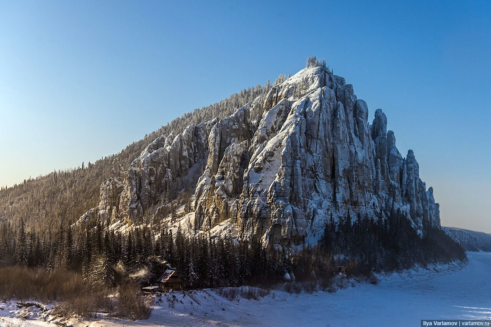
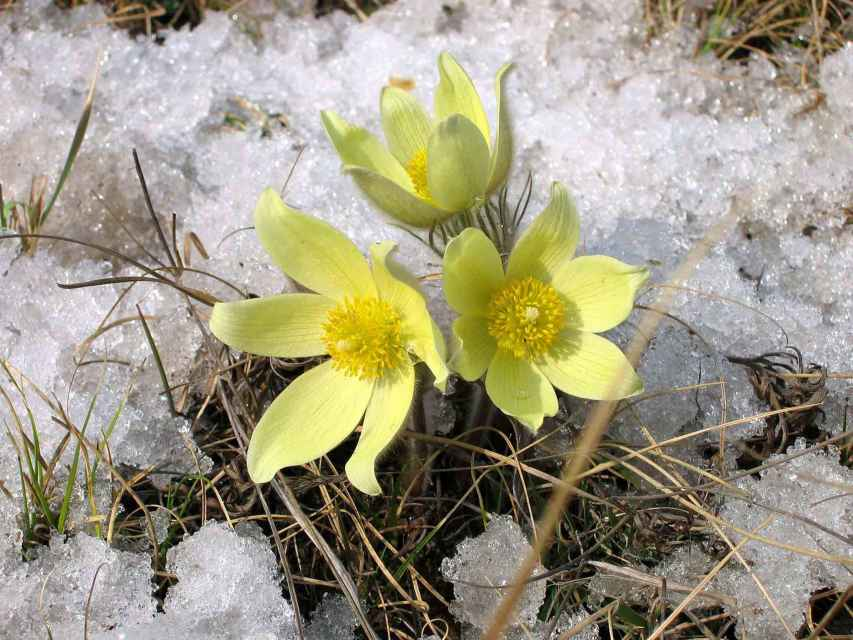
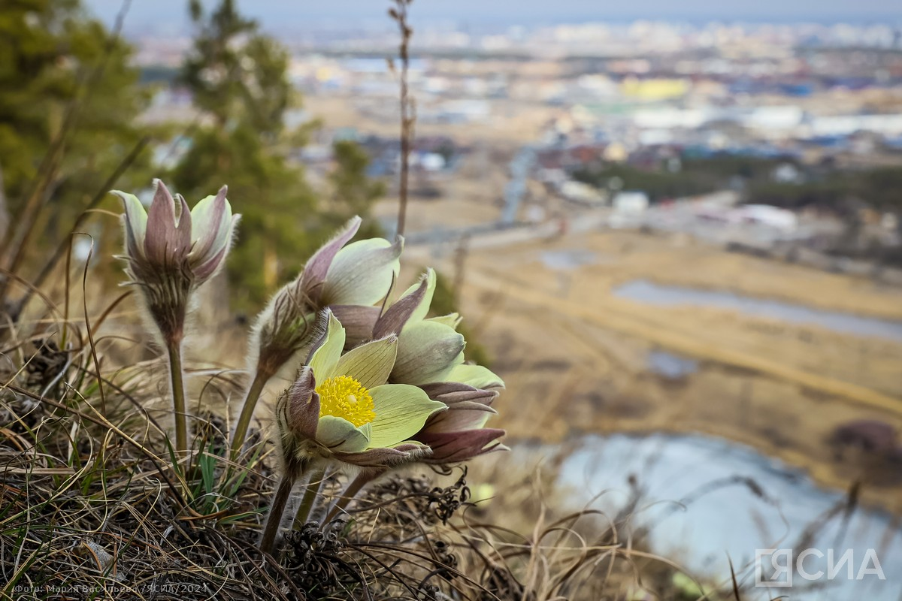

Особенности климата Якутии
Резко-континентальный
Годовая амплитуда температур достигает 100 °C - от -60 °C зимой до +40 °C летом.
Мало осадков
Среднегодовое количество осадков - всего 200–250 мм. Зимой - не более 10–15 мм в месяц.
Инверсия температур
Зимой в низинах холоднее, чем на возвышенностях - плотный холодный воздух застаивается в долинах.
Вечная мерзлота
Почти вся территория Якутии находится в зоне сплошной вечной мерзлоты глубиной до 1500 м.

Климатическая карта Якутии
Нажмите на город, чтобы увидеть сводку климатических данных
Подснежники Якутии
Первые цветы, пробивающиеся сквозь снег после долгой якутской зимы

Подснежники - символ весны в Якутии. После восьми месяцев зимы их появление в мае воспринимается как настоящее чудо.

Якутские первоцветы растут прямо на вечной мерзлоте. Короткое, но яркое лето заставляет их цвести стремительно - всего за несколько недель.
Несмотря на суровый климат, в Якутии произрастает более 200 видов цветковых растений. Летом тундра и тайга покрываются ковром цветов.